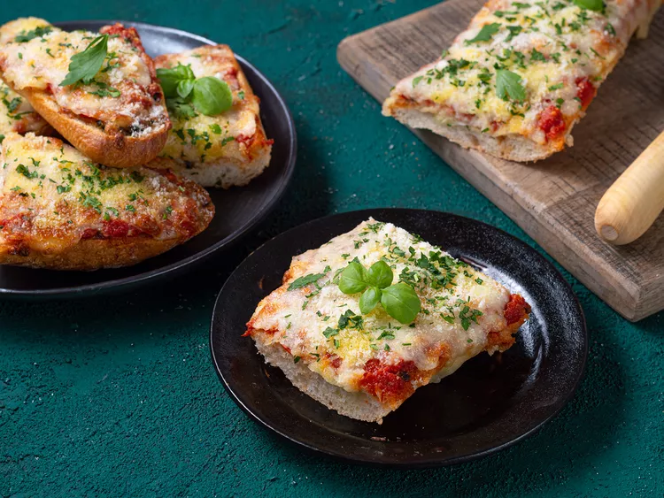

French Bread Pizza

Description
git Meet the absolute best way to eat toast for dinner. Kenji López-Alt
elevates this harried home cook’s classic in a few key ways, so you’ll
want to plan to make it for dinner rather than throwing it together out of
necessity. First, toast your bread with garlic butter to create a crust
that acts as a barrier against sogginess. Then toast it again with a layer
of cheese. Only after these two quick rounds will you add sauce to the
equation. It might feel fussy, but this is still one of the quickest, most
pantry-friendly dishes around—and the superior texture speaks for itself.
Serve a Caesar salad alongside to firmly take this out of snack territory.
Ingredients
- 1 French baguette
- 1 cup pizza/tomato sauce
- 200–250 g mozzarella cheese, shredded
- 100 g pepperoni or cooked chicken — optional
- ½ bell pepper, diced
- ½ small onion, thinly sliced
- ½ tsp dried oregano
- ½ tsp dried basil
- Black pepper
- 1 tbsp olive oil
- Chili flakes — optional
Steps
- Preheat oven to 200°C.
- Cut the baguette lengthwise into two halves.
- Brush the cut surface lightly with olive oil.
-
Toast the bread in the oven for 3–5 minutes. This helps prevent
sogginess.
- Remove from oven and spread pizza sauce over the bread.
- Add mozzarella cheese.
- Add pepperoni/chicken, bell pepper and onion.
- Sprinkle oregano, basil, black pepper and chili flakes.
- Add another layer of mozzarella on top.
-
Bake at 200°C for 10–15 minutes, until the cheese is melted and
bubbling.
-
For a more browned top, switch to the broiler/grill for 1–2 minutes.
- Let it cool for a couple of minutes, then cut into pieces.